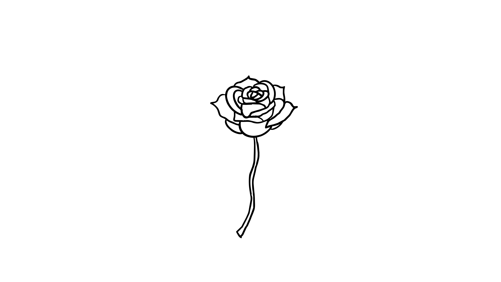

The empty stem is no longer alone. A flower begins to grow at the top, slowly turning a simple line into something recognizable.
The rose starts from the center and expands outward. Each petal overlaps another, creating more shape, depth, and movement.
